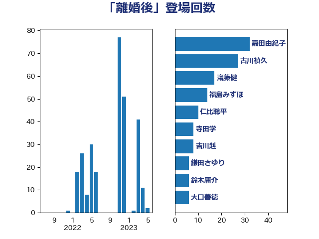

単語「離婚後」

| 嘉田由紀子 | 無所属 | 32 回 |
| 古川禎久 | 自由民主党 | 27 回 |
| 齋藤健 | 自由民主党 | 17 回 |
| 福島みずほ | 社会民主党 | 14 回 |
| 仁比聡平 | 日本共産党 | 10 回 |
| 寺田学 | 立憲民主党 | 8 回 |
| 吉川赳 | 無所属 | 8 回 |
| 鎌田さゆり | 立憲民主党 | 6 回 |
| 鈴木庸介 | 立憲民主党 | 6 回 |
| 大口善徳 | 公明党 | 6 回 |
| 田所嘉徳 | 自由民主党 | 5 回 |
| 浜田聡 | NHK党 | 5 回 |
| 上田清司 | 国民民主党 | 5 回 |
| 米山隆一 | 立憲民主党 | 4 回 |
| 梅村みずほ | 日本維新の会 | 4 回 |
| 吉田統彦 | 立憲民主党 | 4 回 |
| 門山宏哲 | 自由民主党 | 3 回 |
| 葉梨康弘 | 自由民主党 | 3 回 |
| 牧山ひろえ | 立憲民主党 | 3 回 |
| 東徹 | 日本維新の会 | 3 回 |
| 平林晃 | 公明党 | 3 回 |
| 三谷英弘 | 自由民主党 | 3 回 |
| 福重隆浩 | 公明党 | 2 回 |
| 漆間譲司 | 日本維新の会 | 2 回 |
| 柴山昌彦 | 自由民主党 | 2 回 |
| 川田龍平 | 立憲民主党 | 2 回 |
| 小倉將信 | 自由民主党 | 2 回 |
| 佐々木さやか | 公明党 | 2 回 |
| 里見隆治 | 公明党 | 1 回 |
| 自見はなこ | 自由民主党 | 1 回 |
| 津島淳 | 自由民主党 | 1 回 |
| 水野素子 | 立憲民主党 | 1 回 |
| 岸田文雄 | 自由民主党 | 1 回 |
| 山田勝彦 | 立憲民主党 | 1 回 |
| 山下貴司 | 自由民主党 | 1 回 |
| 守島正 | 日本維新の会 | 1 回 |
| 吉田はるみ | 立憲民主党 | 1 回 |
| 加田裕之 | 自由民主党 | 1 回 |